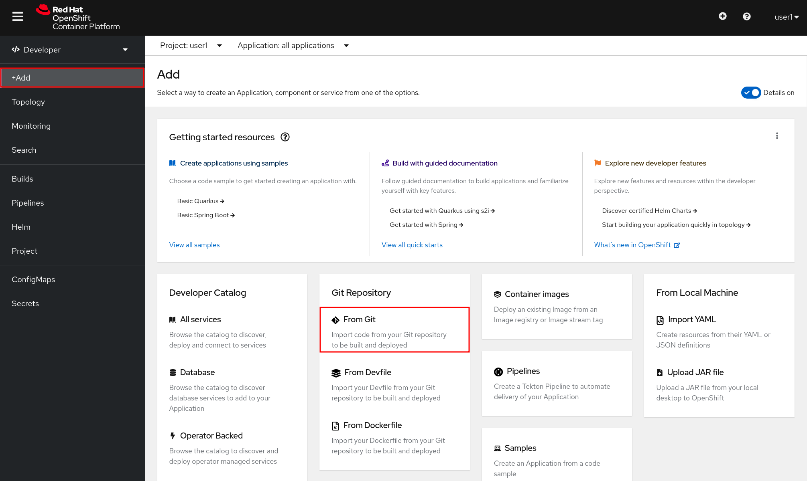
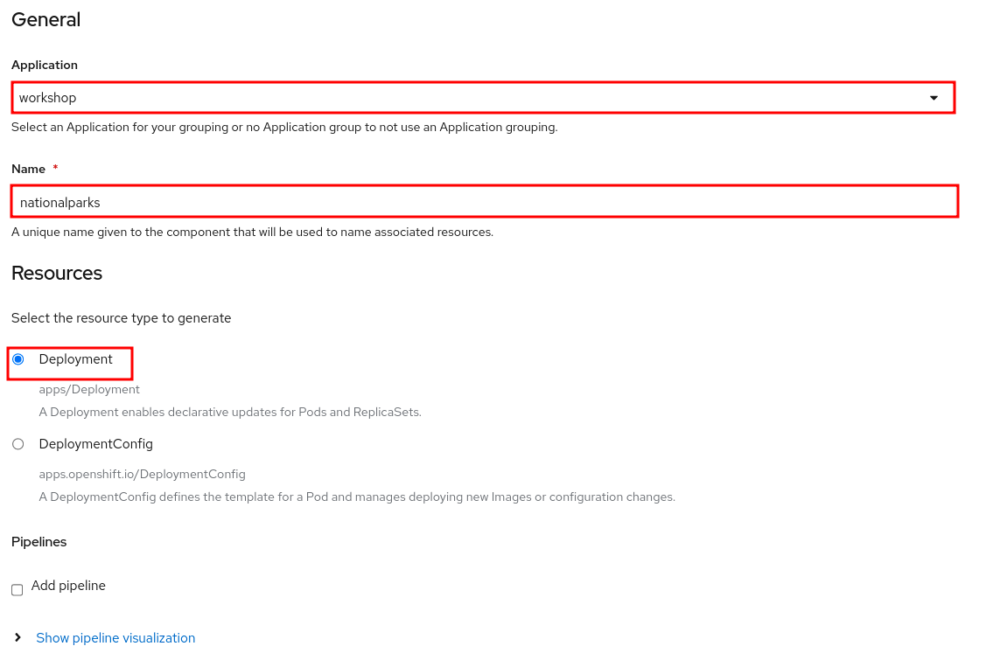
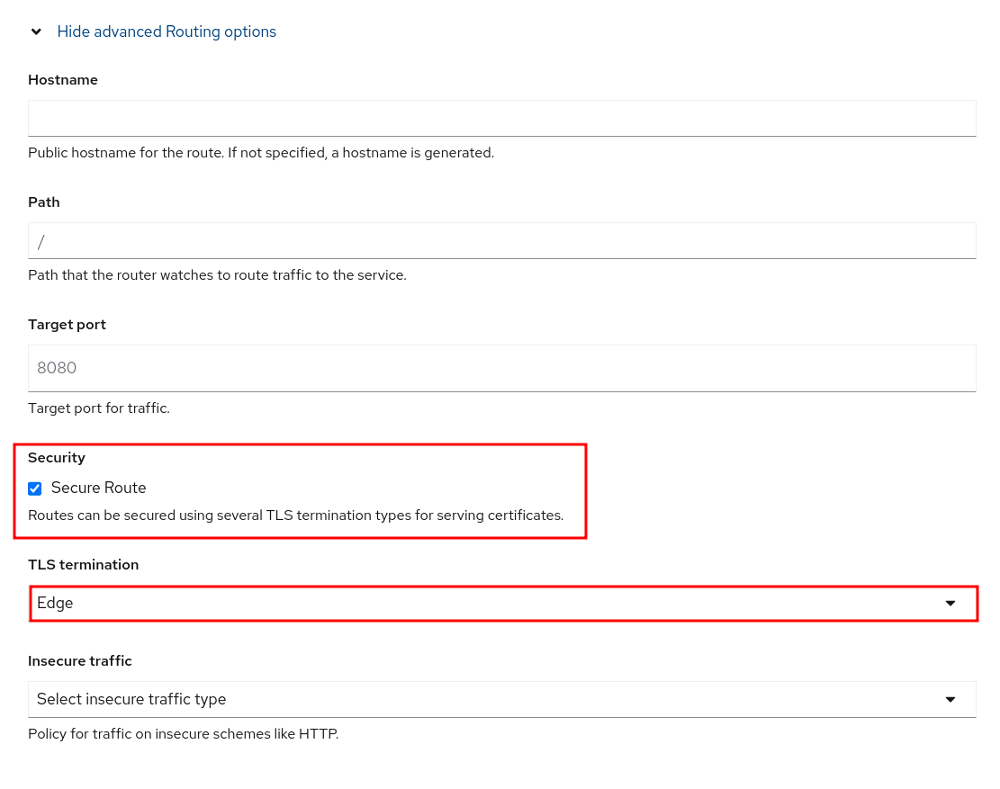
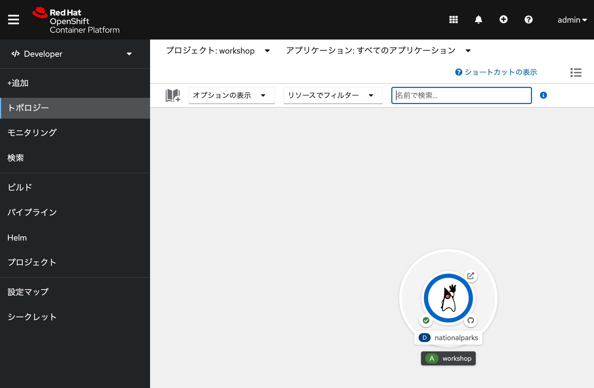
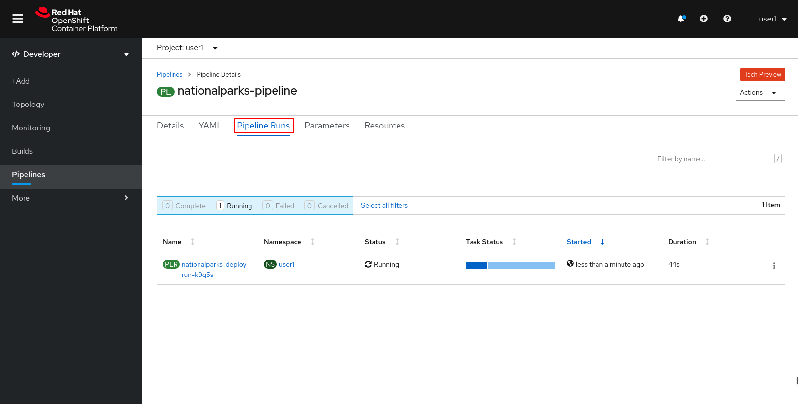

アプリケーションデプロイメント基礎(s2i,Tekton)
このラボでは、パイプラインと、アプリケーションのライフサイクルを処理するようにOpenShiftでパイプラインを設定する方法について学習します。
- OpenShift Pipelinesは、 Tektonを使用してパイプラインを構築するためのクラウドネイティブの継続的インテグレーションおよびデリバリー（CI / CD）ソリューションです。
- Tektonは、柔軟なKubernetesネイティブのオープンソースCI / CDフレームワークであり、基盤となる詳細を抽象化することで、複数のプラットフォーム（Kubernetes、サーバーレス、VMなど）へのデプロイを自動化できます。
- 継続的デリバリー（CD）パイプラインは、ソフトウェアをバージョン管理からユーザーや顧客に直接届けるためのプロセスを自動化したものです。ソフトウェアへのすべての変更（ソース管理でコミット）は、リリースされるまでに複雑なプロセスを経ます。このプロセスには、信頼性が高く反復可能な方法でソフトウェアをビルドすることと、ビルドされたソフトウェアをテストと展開の複数の段階で進行させること（「ビルド」と呼ばれる）が含まれます。
Javaアプリケーションの作成
このラボには独自のgitリポジトリがあるので、単純なJavaS2Iイメージで使用してみましょう。
- プロジェクトの作成
Name を
workshopとして、プロジェクトを作成します。アプリケーションのビルド
- 開発者パースペクティブで、左側のナビゲーションで[ +追加]をクリックし、[ Gitリポジトリ]セクションに移動して、[ Gitから]オプションを選択します。

Import from Gitワークフローは、いくつかの選択に基づいてアプリをデプロイするプロセスをガイドします。GitリポジトリのURLに次のように入力します。
https://github.com/openshift-roadshow/nationalparks.gitNOTE:
OpenShiftは、ソースコードで使用されているGitサーバータイプとプログラミング言語を自動的に推測します。インポート戦略を選択するように求められます。
[インポート戦略の編集]をクリックし（3つのオプションがあります）、[ビルドイメージ]を選択します。
- Devfile：これはDevfilev2仕様を使用してアプリケーションスタックを作成します。devfile.yamlリポジトリには、Devfilev2形式で名前が付けられたファイルが含まれている必要があります。
- Dockerfile：これにより、既存のDockerfileからコンテナイメージが作成されます。
- ビルダーイメージ：これは、Source-to-Imageと呼ばれるメカニズムを使用して、ソースコードから直接コンテナーイメージを自動的に作成します。


ビルダーイメージとしてJavaが選択されていることを確認し、OpenJDK11を使用するにはバージョン openjdk-11-ubi8 を選択してください。
[全般]セクションまで下にスクロールします。
- アプリケーション名 を入力します。
workshop 名前 を入力します。
nationalparks
詳細なルーティングオプションを表示する で セキュアなルート を選択。TLS 終端 を Edge にします。


[作成]をクリックして送信します。
ビルドログを表示するには、トポロジビューでnationalparksエントリをクリックし、[リソース]タブの[ビルド]セクションで[ログの表示]をクリックします。

これは、ビルドおよび依存関係システムとしてMavenを使用するJavaベースのアプリケーションです。このため、Mavenがアプリケーションに必要なすべての依存関係をダウンロードするため、初期ビルドには数分かかります。あなたはこれらすべてがリアルタイムで起こっているのを見ることができます！
リソースの確認 (オプション)
- CLIから作成されたリソースも確認することができます。
oc get builds
oc logs -f builds/nationalparks-1
oc get routes
NOTE:
このアプリケーションはバックエンドアプリケーションであるため、実際にはWebインターフェイスはありません。
parksmapフロントエンドと連携するすべてのバックエンドは、/ws/info/エンドポイントを実装する必要があります。テストするには、ブラウザで次のURLにアクセスしてください。

パイプラインで使うストレージを作成する
OpenShiftは、永続ボリュームクレームリクエストを介してアプリケーションを実行しているポッドに接続される永続ボリュームを使用してストレージを管理します。また、Webコンソールから簡単に管理する機能も提供します。
- 管理者の観点から、 [ストレージ] → [永続ボリュームクレーム]に移動します。
- 右上に移動し、[永続ボリュームクレームの作成]ボタンをクリックします。
- 永続ボリュームクレーム名の中にapp-source-pvcを挿入します。
- RWOシングルユーザーアクセスモードを使用してパイプライン用に1GiB永続ボリュームを作成するため、[サイズ]セクションに1を挿入します。
- 他のすべてのデフォルト設定をそのままにして、[作成]をクリックします。

Tektonパイプラインを作成する
パイプラインは配信サイクルのさまざまな段階間でアプリケーションをプロモートする機能を提供するため、パイプラインを実行する継続的インテグレーションサーバーであるTektonは、継続的インテグレーションの役割を持つプロジェクトにデプロイされます。このプロジェクトで実行されるパイプラインには、配信サイクルのさまざまな段階をモデル化するすべてのプロジェクトと対話するための権限があります。
この例では、コードがあるのと同じGitHubリポジトリに格納されているパイプラインをデプロイします。より現実的なシナリオでは、インフラストラクチャーをコード原則として尊重するために、使用するすべてのOpenShiftリソース定義とともにすべてのパイプライン定義を保存します。
Nationalparksバックエンド用のTektonパイプラインを作成します。
右上の ＋ を選択します。 
以下の yaml ファイルを貼り付けします。

Pipelineリソース
apiVersion: tekton.dev/v1beta1
kind: Pipeline
metadata:
name: nationalparks-pipeline
spec:
params:
- default: nationalparks
name: APP_NAME
type: string
- default: 'https://github.com/openshift-roadshow/nationalparks.git'
description: The application git repository url
name: APP_GIT_URL
type: string
- default: master
description: The application git repository revision
name: APP_GIT_REVISION
type: string
tasks:
- name: git-clone
params:
- name: url
value: $(params.APP_GIT_URL)
- name: revision
value: $(params.APP_GIT_REVISION)
- name: submodules
value: 'true'
- name: depth
value: '1'
- name: sslVerify
value: 'true'
- name: deleteExisting
value: 'true'
- name: verbose
value: 'true'
taskRef:
kind: ClusterTask
name: git-clone
workspaces:
- name: output
workspace: app-source
- name: build-and-test
params:
- name: MAVEN_IMAGE
value: gcr.io/cloud-builders/mvn
- name: GOALS
value:
- package
- name: PROXY_PROTOCOL
value: http
runAfter:
- git-clone
taskRef:
kind: ClusterTask
name: maven
workspaces:
- name: source
workspace: app-source
- name: maven-settings
workspace: maven-settings
- name: build-image
params:
- name: IMAGE
value: image-registry.openshift-image-registry.svc:5000/$(context.pipelineRun.namespace)/$(params.APP_NAME):latest
- name: BUILDER_IMAGE
value: >-
registry.redhat.io/rhel8/buildah@sha256:82aa9592f3262313ec52f7a2335641e2581b0d0d9807980846d0539bb77d0657
- name: STORAGE_DRIVER
value: vfs
- name: DOCKERFILE
value: ./Dockerfile
- name: CONTEXT
value: .
- name: TLSVERIFY
value: 'true'
- name: FORMAT
value: oci
runAfter:
- build-and-test
taskRef:
kind: ClusterTask
name: buildah
workspaces:
- name: source
workspace: app-source
- name: redeploy
params:
- name: SCRIPT
value: oc rollout restart deployment/$(params.APP_NAME)
runAfter:
- build-image
taskRef:
kind: ClusterTask
name: openshift-client
workspaces:
- name: app-source
- name: maven-settings
Tekton パイプラインの実行
Pipelineは、CDパイプラインのユーザー定義モデルです。パイプラインのコードは、ビルドプロセス全体を定義します。これには通常、アプリケーションをビルドし、テストしてから配信するためのステージが含まれます。 TaskとClusterTaskには、実行するステップが含まれています。ClusterTasksは、OpenShift Pipelinesがインストールされているクラスター内のすべてのユーザーが利用できますが、Tasksはカスタムにすることができます。
このパイプラインには、次の4つのタスクが定義されています。
git clone：これは、ClusterTask国立公園のソースリポジトリのクローンをWorkspace app-source作成し、作成されたPVCを使用するに保存します。app-source-workspace
build-and-test：を使用してJavaアプリケーションをビルドおよびテストしますmaven ClusterTask
build-image：これはbuildah ClusterTaskであり、OpenShiftの入力としてバイナリファイル（この場合は前のタスクで生成されたJARアーティファクト）を使用してイメージをビルドします。
redeploy： ClusterTaskを使用して、前のラボで作成したopenshift-client名前のデプロイメントを使用して、OpenShiftに作成されたイメージをデプロイします。nationalparks
- 左側のメニューから[パイプライン]をクリックし、次に[ nationalparks-pipeline ]をクリックして、作成したパイプラインを表示します。

パイプラインは複数のパラメータがあり、使用する必要のあるものにデフォルト値があります。2つのワークスペースを使用しています：
- app-source ：以前に作成されたPersistentVolumeClaim にリンクされています。これは、別のタスクapp-source-pvcで使用されるアーティファクトを保存するために使用されます
- maven-settings： Mavenキャッシュ用のEmptyDirボリューム。これをPVCで拡張して、後続のMavenビルドを高速化することもできます。
Developer Perspective内で、左側のメニューに移動し、[ Pipeline ]をクリックしてから、 nationalparks-pipelineをクリックします。
- 右上の[アクション]リストから、[開始]をクリックします。

- パラメータを確認します。
パイプラインを追加するためのパラメータが表示され、デフォルトのものが表示されます。
APP_GIT_URLでnationalparks、 GitHubからリポジトリを確認します。
https://github.com/openshift-roadshow/nationalparks.git
- ワークスペース → app-sourceで、リストからPVCを選択し、次にapp-source-pvcを選択します。
- [開始]をクリックして、パイプラインを実行します。

パイプラインの確認
- Webコンソールからパイプラインの実行を簡単に追跡できます。
- Developer Perspectiveを開き、左側のメニューに移動し、[ Pipeline ]をクリックしてから、 nationalparks-pipelineをクリックします。
- [パイプラインの実行]タブに切り替えて、進行中のすべてのステップを監視します。

- PipelineRun National-parks-deploy-run-をクリックします。

- 次に、実行中のタスクをクリックしてログを確認します。

- PipelineRunが正常に完了したことを確認します。

追加のデモ （オプション）
OpenShiftではBuildConfigを定義することでコンテナを作成するSource-2-Imageという仕組みが提供されています。それに加えて、WebhooksなどBuildConfigを実行すべき状況を制御するトリガーも提供されています。
- OpenShiftは、ビルドをトリガーするためにリモートシステムからフックを受信することをサポートするAPIエンドポイントを提供します。
- コードリポジトリのフックをOpenShiftのAPIに向けることで、コード/ビルド/デプロイの自動化を実現することができます。
詳細なステップは こちら を参考に実施してみてください。